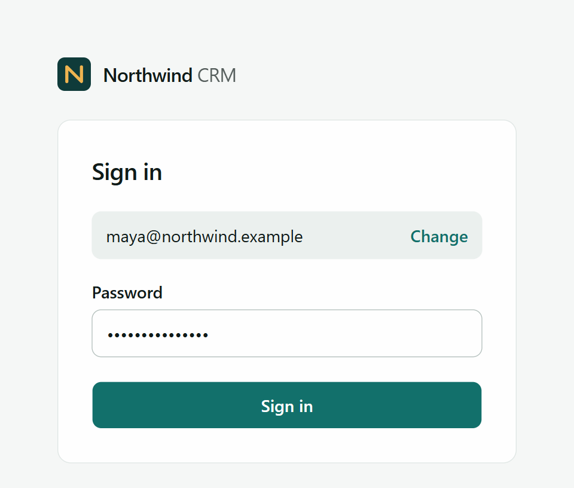
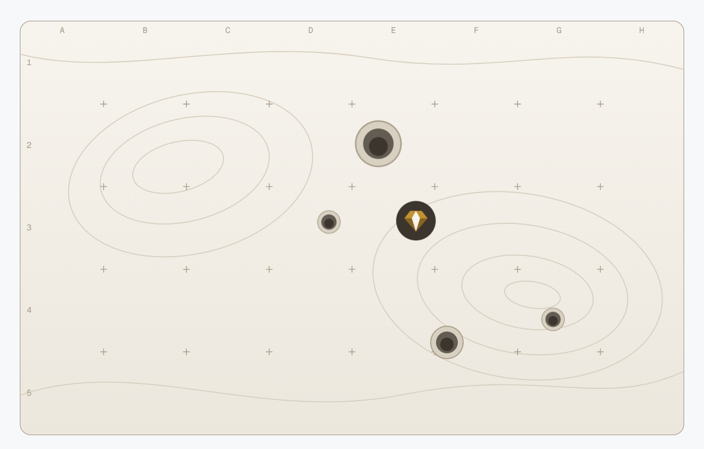
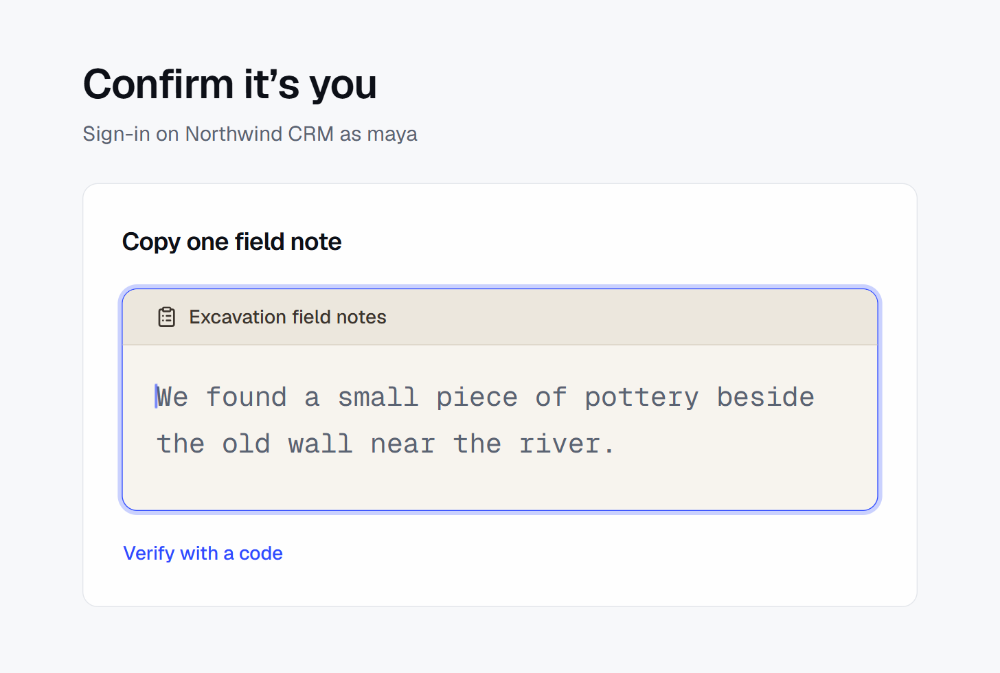
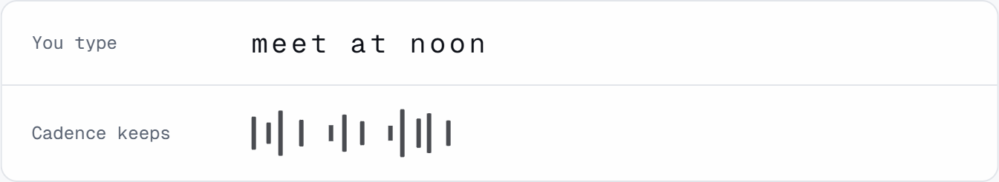

Passwords get stolen all the time
Passwords leak through phishing, reuse across sites or a sticky note on a monitor, and once someone has yours the login page has no way to tell it isn’t you.
AI agents can get around “secure” two-factor logins by reading the code from your email and signing in without you ever knowing.

Cadence
Cadence checks your typing and mouse
Set up once. Play a short clicking game and copy a few sentences on Cadence.
Sign in like normal. Cadence compares how you type and click with your profile.
Only asked when it’s unsure. If it can’t tell, you get a quick test picked from your own profile.


Cadence
Demo
Cadence
Privacy and security

Never the letters. Cadence keeps key timing and which area of the keyboard was used, and password fields send timing only.
The website never sees it. The typing goes straight to Cadence, and the site you sign in to only asks whether it looks like you.
Checked on the server. The website’s server asks Cadence for the answer, so the check can’t be skipped in the browser.
Deleted on a timer. Sign-in data is removed after 30 days, and you can delete your whole profile any time.
We tested Cadence against a Chrome extension that copies a person’s mouse and keyboard input, and it recognized that it wasn’t the right person.
Cadence
Scaling it
Any site can add Cadence with a few lines of code, and one profile covers every site you connect.
// Northwind’s login page
recorder = recordActivity({ root: form })
{ token } = await sendEvidence(recorder, site)
# Northwind’s server
check = cadence("POST", "/v1/checks", {
"subject": user.cadence_subject,
"evidence": token, "action": "sign_in"})
if check["resolved"]: sign_in(user)
93%
Given one sign-in from the real person and one from someone else, it picks the real person 93% of the time, tested on 1,000 people it had never seen.
Next we want to test real logins over weeks and devices, add passkeys as a backup and move off SQLite.
Cadence